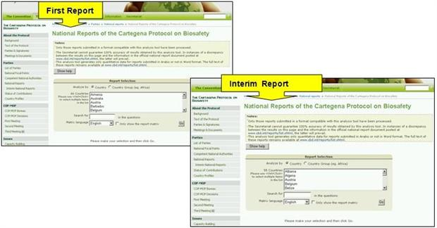
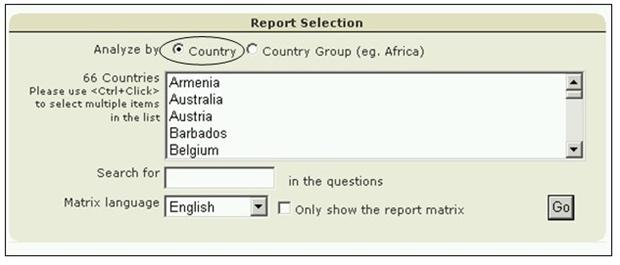

In the National Reports section of the Reporting page, national reports on the implementation of the Protocol can be accessed by selecting a country from the drop down menu in the text.

Figure 32
This section also provides links to the National Reports Analyzer. This is an electronic facility which is intended to assist users to aggregate and analyse data according to selected Parties, geographic areas, economic groups and other criteria.

Figure 33
On the Analyzer, the user can refine the search using known words in the questions or selecting the matrix languages used for the analyses. Selecting the Go button calls up the search results. These are tabled below the search facility.

Figure 34

Figure 35